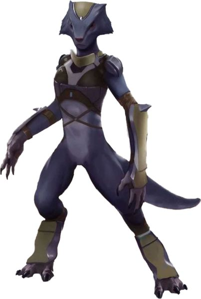

Selonian
Special Abilities: Selonians begin the game with one rank in Coordination. They still may not train Coordination above rank 2 during character creation. The structure of a Selonian's eyes allows her to see in near total darkness. She may remove all ■ added to checks due to darkness, though she still cannot see in absolute darkness.
Tail: A Selonian's tail may be used as a Brawl weapon. When used to attack, it uses the Brawl skill combined with the Agility characteristic, but like most Brawl weapons, adds its weapon damage to the character's Brawn for total damage. It always counts as equipped, and has the following weapon profile (Brawl; Damage + 1; Critical 5; Range [Engaged]; Disorient 2, Knockdown). The Selonian may trigger Knockdown with [1 Advantage] . but still must spend additional [1 Advantage] to knock down targets with a higher silhouette as per the Knockdown quality rules
For Selonians, nothing is more important than the protection and preservation of their species, and they will go to any lengths to defend their homeworld and their kin. Honorable and forthright to a fault, Selonians appear backwards and gullible to outsiders, but what they lack in cunning they make up for in ferocious determination
Covered in short, sleek brown or black fur, Selonians are carnivorous, mammalian bipeds with long, slender bodies and elongated heads that bristle with whiskers. Adult females average about two meters tall, making them significantly taller than most humans, with slightly longer arms and legs. Males of the species tend to be smaller and weaker than the females. Selonians have strong tails about a half meter long that they use to counterbalance themselves when walking upright. Though generally bipedal, Selonians can move comfortably on four limbs, and their retractable claws can be used for digging and burrowing, climbing, or defense. Most Selonians are sterile females, with only one fertile female per den, and relatively few males.
Selonian society is governed by a rigid caste system, which is itself a product of their biology. Though a technologically advanced society, there is no central authority on Selonia. Their culture is organized around dens, which are composed of a single fertile female known as the Queen, a few males, and large number of sterile females. The dens are further divided into septs, the offspring of individual males. The females of the septs tend to serve specific functions within the den based on their genetic lineage, as determined by the Queen. Males in Selonian society have virtually no purpose beyond breeding and are generally dismissed as essentially useless for anything but procreation with the Queen.
Pragmatic, industrious, and sober, Selonians put the necessities and security of their den and their race in general above all else. Individual needs and desires are almost always subsumed to those of the den. Since the actions of an individual can affect the whole den, Selonians put a high value on honesty and fidelity. Duplicity among the members of a den is taboo in the extreme; lying is a crime on a par with murder. While Selonians are aware that most alien species are not as scrupulously honest in their dealings, they have difficulty comprehending deception and they are virtually incapable of outright deceit.
Some Selonians are trained to deal with outsiders, being schooled in language, culture, and expressions intended to put humans and other aliens at ease. To those unfamiliar with Selonian ways, they may appear outgoing and friendly, though most have no interests outside those of their den. Occasionally, a Selonian thus trained may become enamored of alien cultures and decide to travel beyond the Corellian System. These individuals are called Dravas ("Wanderers" in the Selonian tongue) and are generally viewed by most Selonians with a mixture of pity and disgust. Yet even these Wanderers put their den and race above all else, and most eventually return home to Selonia.
Selonians are native to the fifth planet of the Corellian System. Selonia is a temperate world abundant in water, with vast oceans covering most of its surface. The myriad small islands and archipelagos that make up the planet's landmass are connected by a sprawling and complex network of tunnels excavated by the Selonians beneath their world's oceans, allowing the natives to journey across Selonia without ever setting foot on a vessel
The Selonian language, Mandaba, is difficult for non-Selonians to speak, and virtually impossible for them to speak well. While several models of protocol droids are able to communicate fluently in Mandaba, even they cannot precisely convey every nuance of the language. The Selonian language is almost never heard outside of the Corellian System, but most Selonians who deal with outsiders are at least conversant in Basic.
Selonians generally have little use for or desire to engage in events in the wider galaxy. However, those who do tend to have been specially trained to interact with humans and other aliens, and thus have a better understanding of non-Selonian cultures. A very small number of Selonians, known as Wanderers, occasionally seek out adventure beyond their homeworld, leaving behind their dens to explore the galaxy.
Treated as little better than prized breeding stock, male Selonians do not have many rights in Selonian society. Smaller and far less numerous than their female counterparts, they are generally considered inferior by the females of the species. Kept within their dens as virtual prisoners and expected to perform no other duties besides procreation with the Queen, male Selonians are rarely seen by outsiders.
In spite of this, Selonian females are often identified by their sept. This has nothing to do with paternal pride or affection, however, but instead identifies hereditary traits passed down through the male line. Though genetically predisposed to accept their status within Selonian society, some males do rebel at their life of forced indolence and servitude, albeit in a modest manner that doesn't endanger the welfare of the den, such as sneaking out of the den for several hours or petitioning the Queen for some sort of responsibility.
Female Selonians have difficulty understanding how males can be so fully integrated into human and other alien cultures, and they tend to view males in positions of authority with some degree of hesitation, if not outright suspicion. As such, Selonians are generally more favorably inclined towards matriarchal societies, such as the Drall.